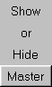

| What is a dated master dendrochronology? See figure at right: | |
|---|---|
|
 |
When you try skeleton plotting for yourself, the master chronology can be shown or hidden:
|
 |
Previous Page |
Next Page
Introduction |
Dendrochronology Applications |
Crossdating Application |
Ring-Growth Anomalies
Sensitivity-Complacency |
Skeleton Plotting |
Relative Scale |
Master Chronology
Pattern Matching |
Finding the Dates |
Absent/False Rings |
Try Skeleton Plotting for Yourself!
Laboratory of Tree-Ring Research